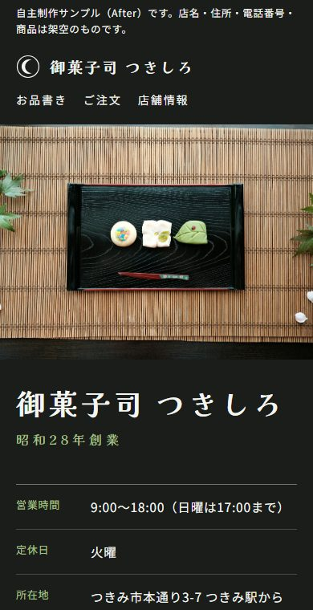

御菓子司 つきしろ 様
ホームページ改善提案書
現在のホームページをスマートフォンで営業時間・場所・商品と価格がすぐ分かる1ページ構成に作り直すことを提案します制作期間は約2週間料金は合計54,800円（税込）です
1. 現在のホームページの問題点
| No. | 問題点 | 確認した内容 |
|---|---|---|
| 1 | スマートフォンで読めない | 幅800pxの表で組まれており、スマートフォンでは文字が約5pxまで縮み、横に動かさないと読めません。 |
| 2 | 情報が古い | 新着情報が2016年12月で止まっています。価格表が消費税8%のままで、Flash Player の案内が残っています。 |
| 3 | 営業情報が確定していない | 営業時間に「変更となる場合がございます」とあり、定休日は本文の末尾にしか書かれていません。 |
| 4 | 来店に必要な情報がない | 住所・最寄り駅からの道順・駐車場の有無が載っていません。 |
| 5 | 写真が小さく暗い | 写真が幅240pxで強く圧縮されており、商品の色と形が伝わりません。 |
| 6 | 動かないリンクがある | 「メール」「掲示板（工事中）」「リンク集」のリンク先がありません。 |
| 7 | 不要な表示がある | アクセスカウンター・「IE8で最適化」の表記は、来店の判断に使われない情報です。 |
2. 作り直した画面（Before／After）



3. 改善内容
| No. | 改善内容 | 対応する問題点 |
|---|---|---|
| 1 | スマートフォンの幅に合わせて組み直します。本文は15px以上にし、横に動かさずに読めるようにします。 | 1 |
| 2 | 店名のすぐ下に、営業時間・定休日・所在地をまとめて載せます。 | 3・4 |
| 3 | 価格表を現在の税込価格に直し、商品ごとに一言の説明を付けます。月替わりの上生菓子は「店頭でご案内」とし、古くならない書き方にします。 | 2 |
| 4 | 写真を横長2枚に絞り、幅いっぱいに大きく載せます。 | 5 |
| 5 | 店頭・電話予約・地方発送の3つの買い方を載せ、店舗情報（道順・駐車場・支払い方法）も載せます。 | 4 |
| 6 | 動かないリンク・アクセスカウンター・Flash の案内を削除します。 | 6・7 |
| 7 | 公開時に https（SSL）で表示されるよう設定します。 | ― |
4. 制作の流れ（約2週間）
- ヒアリング営業時間・商品・価格・写真の確認（1日）
- 構成と原稿ページの構成案と文章をお送りします（3日）
- デザインPC・スマートフォンの画面案をお送りします（3日）
- 制作・確認実際のページを作り、端末で表示を確認します（4日）
- 公開サーバーへの公開と更新方法の説明（1日）
※各段階の修正は2回まで料金に含みます。日数はご確認の返信をいただいてからの目安です。
5. 料金
| 項目 | 内容 | 金額（税込） |
|---|---|---|
| ホームページのリニューアル | 1ページ構成・スマートフォン対応・原稿作成・写真の調整 | 49,800円 |
| 公開作業 | サーバーへの公開・SSL設定・更新方法の説明書 | 5,000円 |
| 合計 | 54,800円 |
※サーバー・ドメインの費用は含みません。お持ちでない場合は、月額500円前後のサービスをご案内します。
※ページの追加は1ページにつき9,800円です。写真の撮影は含みません（撮影のしかたの説明書をお渡しします）。
※お支払いはココナラの取引画面からお願いします。